Leaning Tower of Pisa · comparison pass 3
Left: the reference photo. Right: the model from the same viewpoint. Write what differs in evidence.comparisons.
ref 0 · north-east · 41.8°, -29.1°
_-_2022-08-31_-_15.jpg?width=900)
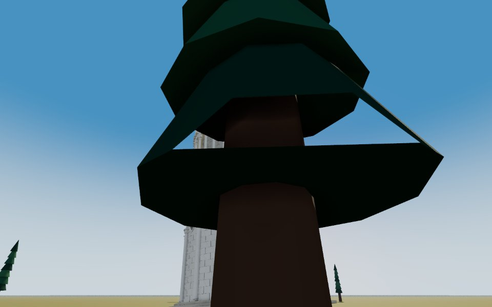
ref 1 · west · 272.6°, -26.7°
_-_Exterior_03.jpg?width=900)
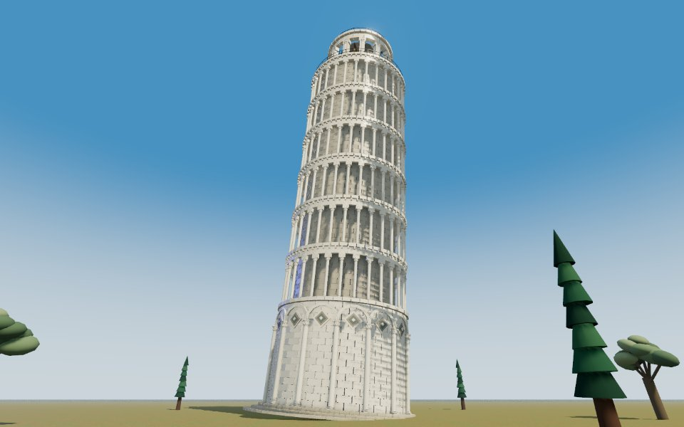
ref 2 · west-south-west · 243.9°, -14.2°

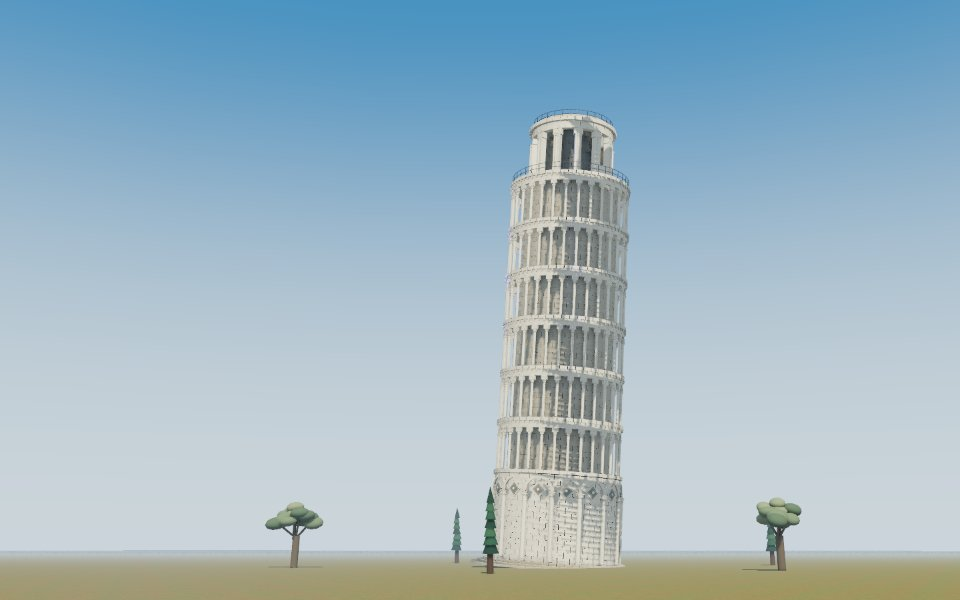
ref 3 · south · 193.2°, -20.5°
_-_Exterior_01.jpg?width=900)
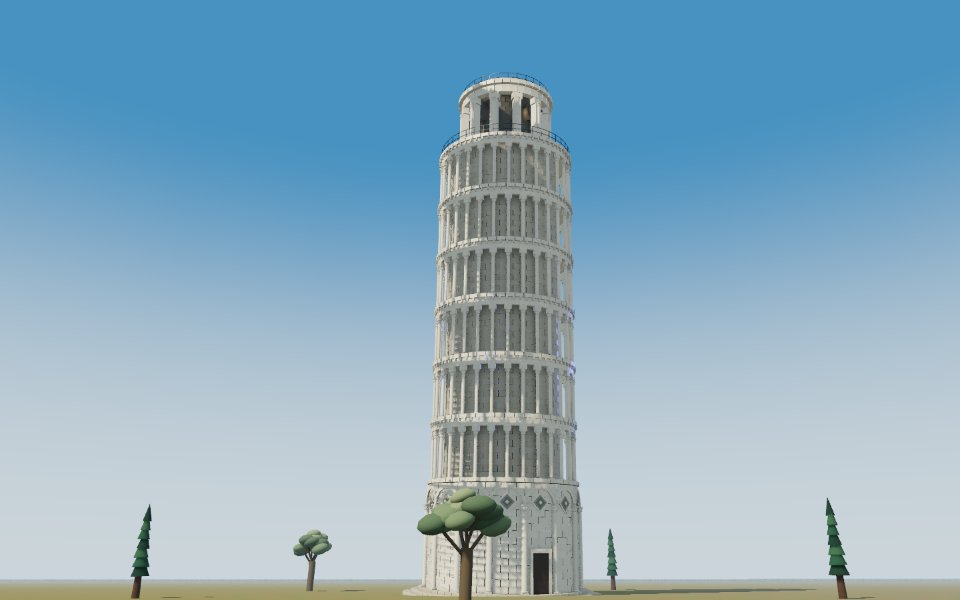
The end of every phase
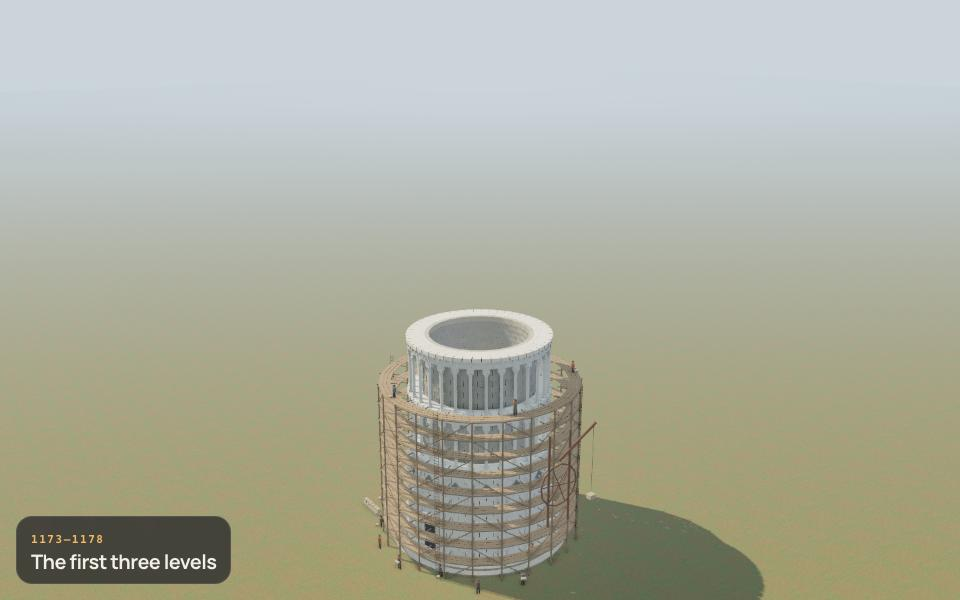
1173–1178 · The first three levels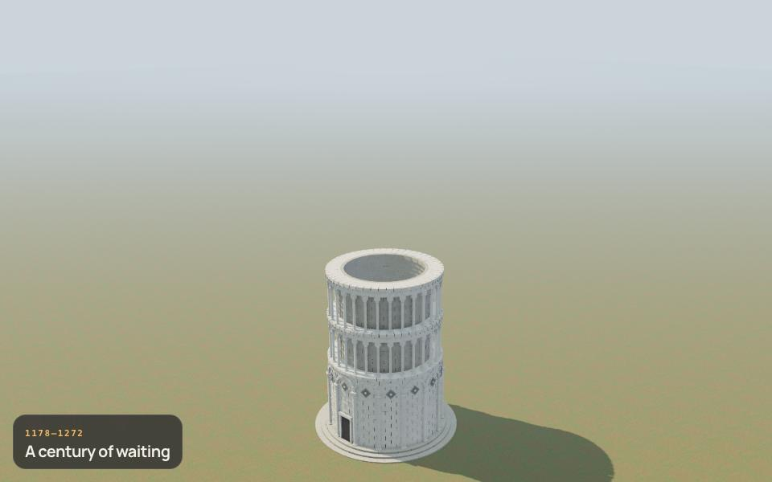
1178–1272 · A century of waiting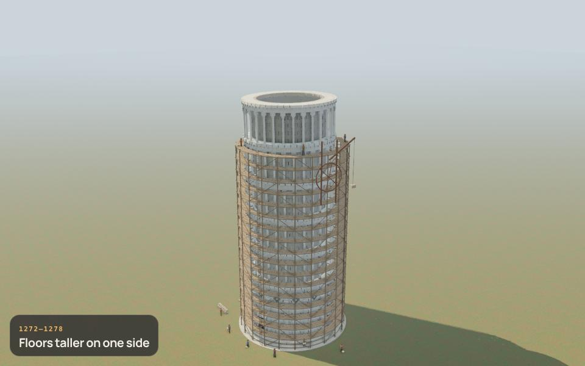
1272–1278 · Floors taller on one side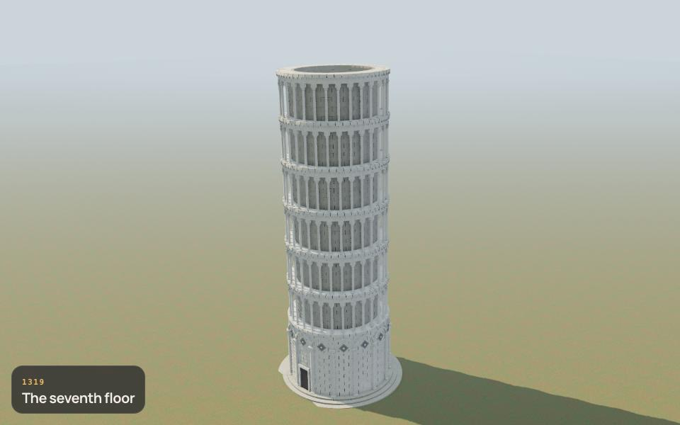
1319 · The seventh floor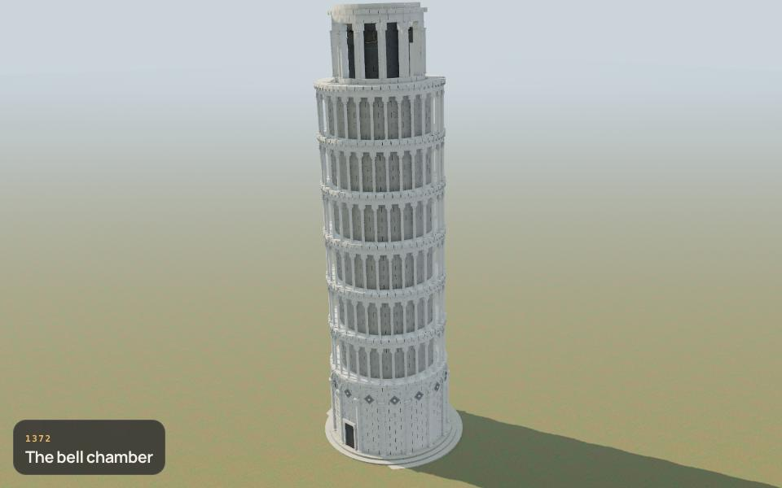
1372 · The bell chamber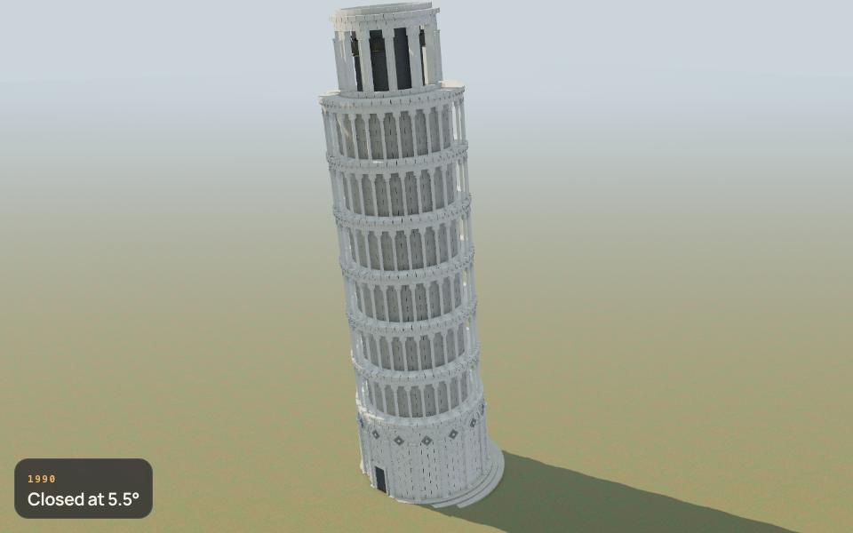
1990 · Closed at 5.5°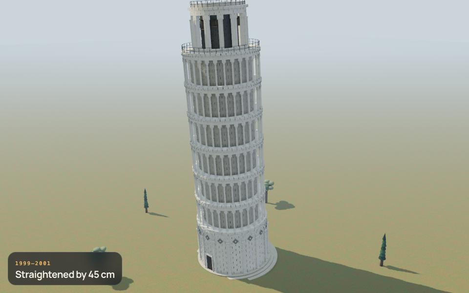
1999–2001 · Straightened by 45 cm